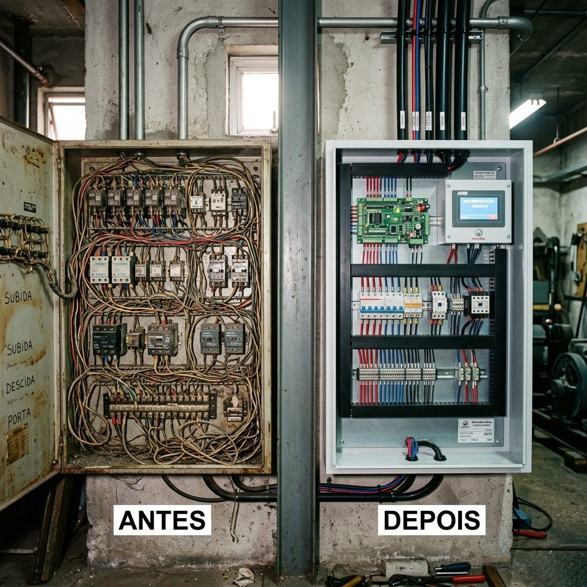
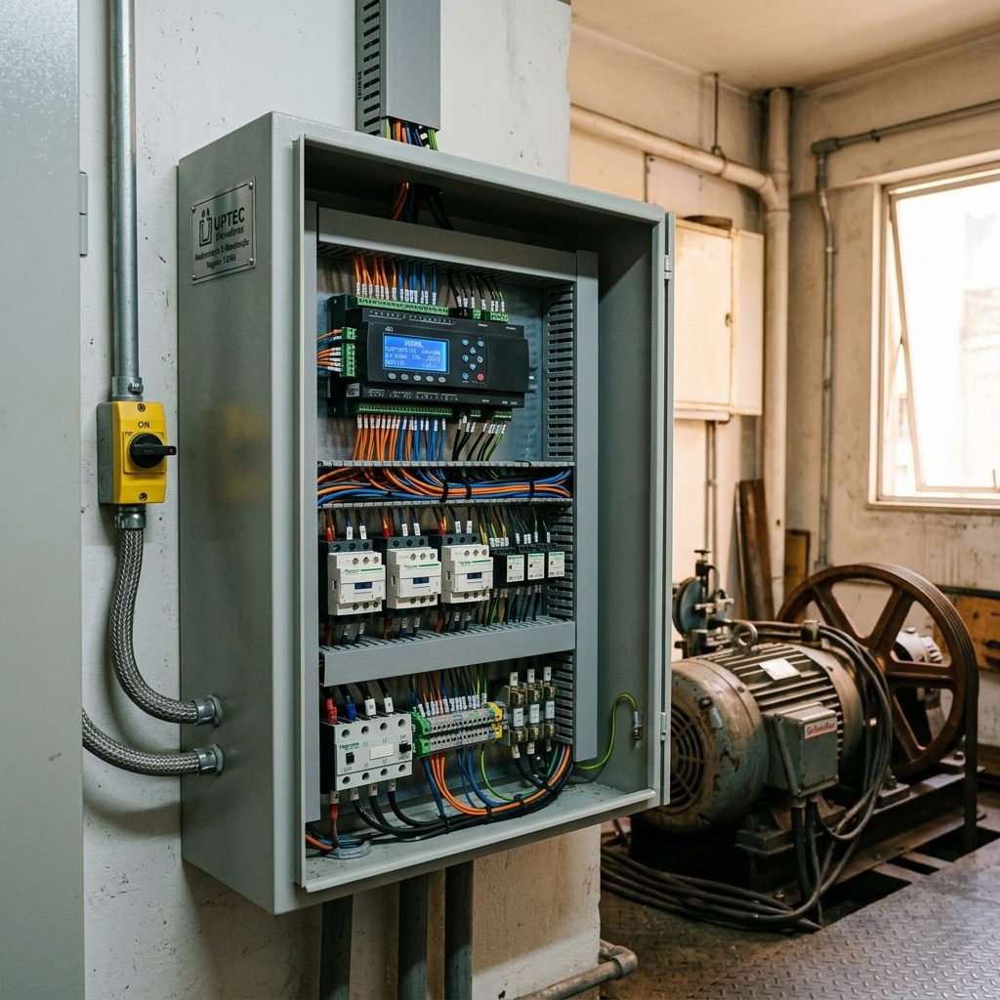

RAT com foto, data e histórico
Todo atendimento é documentado e enviado por e-mail e WhatsApp. Você vê exatamente o que foi feito no seu elevador, com prova fotografica antes e depois.
Transparência totalEngenharia responsável / CREA-BA 0010441166
Manutenção, modernização e instalação de elevadores em Salvador e em todo o estado da Bahia. Cada serviço comprovado em relatório técnico (RAT) com foto, data e histórico, e plantão 24h com atendimento em até 30 minutos.
Por que a UPTEC
Todo atendimento é documentado e enviado por e-mail e WhatsApp. Você vê exatamente o que foi feito no seu elevador, com prova fotografica antes e depois.
Transparência totalPlantão técnico 24h, 365 dias por ano. Quando o elevador para, a engenharia chega rápido.
Responsabilidade técnica assinada por engenheiro mecânico registrado no CREA-BA em cada serviço executado.
Atendemos Thyssen, Atlas, Otis, Schindler, Orona e outras marcas. Equipe certificada em NR-10, NR-12, NR-33 e NR-35, com garantia de 365 dias nos serviços executados.
O que fazemos
Engenharia aplicada em cada visita, em conformidade total com as normas ABNT e NR. Da manutenção preventiva à instalação de elevadores novos.
12 visitas anuais e 27 itens críticos inspecionados conforme ABNT NBR 16083. Relatório fotográfico (RAT) ao fim de cada visita.
Diagnóstico técnico, peças certificadas e ART emitida. Garantia de 365 dias nos serviços executados.
30 minutos para chegar, 365 dias por ano. Diagnóstico imediato e RAT no mesmo dia, inclusive em casos com pessoas presas.
Chamar plantãoComando microprocessado, operadores automáticos e adequação às ABNT NBR 16858-1 e 16858-2, sem troca da estrutura do poço. Mais eficiência energética, menos chamados.
Linha própria UPTEC, em parceria com a STEP. Projeto por engenheiro, ART de instalação e treinamento da equipe do cliente.
Laudo assinado por engenheiro mecânico para compra, venda, fiscalização ou troca de empresa, com recomendações priorizadas.
A UPTEC em números
Para quem atendemos
Manutenção mensal para síndicos e administradoras, com RAT em cada visita.
Contratos para edifícios comerciais e corporativos, com SLA e plantão.
Habilitada para pregões e concorrências em todo o território nacional.
Instalação da linha UPTEC e modernização para obras novas.
Quem somos
A UPTEC Elevadores nasceu da indignação do nosso fundador, Luis Felipe Cordeiro, com uma realidade que se repetia no mercado: visitas técnicas de 30 minutos sem manutenção real, sem relatório, sem foto, sem histórico, e segurança comprometida.
Há cerca de 3 anos, o que começou como MEI se consolidou como UPTEC ELEVADORES LTDA, com sócios, engenheiros responsáveis e estrutura técnica completa. Nossa missão é inegociável: manutenção de verdade, com relatório fotográfico em cada atendimento, equipe equipada, normas cumpridas e transparência total.
Garantir segurança, eficiência e transparência em cada elevador que cuidamos.
Ser referência no Brasil em manutenção e modernização de elevadores com padrão de engenharia.
Integridade técnica, segurança em primeiro lugar, transparência operacional e atendimento humano.
Case real
Quando a UPTEC chegou, encontrou um cenário crítico: quadros de comando com oxidação acelerada, 3 mm de poeira acumulada em placas eletrônicas com risco grave de incêndio, cabos de tração desfiados e desiguais, vazamento de óleo no motor e elevadores interditados pela falta de manutenção da empresa anterior.

Em 5 dias úteis (28/05 a 01/06/2026), a equipe executou:
Relatório fotográfico antes e depois entregue ao cliente. Esse é o padrão UPTEC, e é esse padrão que levamos para o seu condomínio.
Dúvidas
Seguimos a ABNT NBR NM 207: em geral 12 visitas por ano, com checklist de 27 itens e RAT fotográfico a cada visita.
Plantão 24h, 365 dias, com atendimento em até 30 minutos para chamados críticos.
Relatório de Atendimento Técnico: registro com foto, data e histórico de cada serviço, enviado por e-mail e WhatsApp.
Sim. Todos os serviços têm ART assinada pelos engenheiros responsáveis, registrados no CREA-BA.
Sim, somos multimarcas: Thyssen, Atlas Schindler, Otis, Schindler, Villares, Orona e outras.
365 dias de garantia nos serviços executados.
Pronto quando você estiver
Nossa engenharia responde rápido. Emergência 24h com atendimento em até 30 minutos.
Órgãos públicos
A UPTEC ELEVADORES atende órgãos públicos com documentação completa, ART emitida e padrão de execução comprovado em relatório técnico. Atuamos em pregões eletrônicos, presenciais, concorrências e dispensas em todo o território nacional.
Quem somos no edital
A UPTEC ELEVADORES LTDA está habilitada para participar de licitações públicas (pregões eletrônicos, presenciais, concorrências e dispensas) em todo o território nacional, com documentação fiscal, técnica e jurídica regular.
Atuamos junto a órgãos federais, estaduais e municipais, conselhos profissionais, autarquias, fundações, hospitais públicos, universidades e tribunais. Nosso forte é executar com excelência aquilo que está em edital, sem improviso, sem atraso e sem maquiagem técnica. Cada serviço termina com ART, RAT fotográfico e laudo assinado por engenheiro mecânico.
Habilitação
Documentação jurídica, fiscal, econômico-financeira e técnica regular, pronta para envio em até 24h.
Engenharia responsável
Engenheiros responsáveis vinculados e registrados no CREA-BA, atuando em campo, não apenas no contrato.
Diferencial no certame
Como participamos
Da leitura do edital à entrega do RAT no último mês de contrato: cada etapa rastreada, documentada e com engenheiro responsável.
Enviamos proposta técnica e comercial completa em até 24h após recebimento do edital. Verificamos requisitos de habilitação, capacidade técnica e especificações do objeto.
Participamos no Comprasnet, BEC-BA e portais estaduais/municipais. Praticamos preços competitivos com documentação sempre pronta para upload imediato.
Para contratos por concorrência ou dispensa de licitação, entregamos a proposta formatada conforme Decreto n° 11.246/2022 e Lei 14.133/2021 (nova Lei de Licitações).
Cada visita preventiva ou corretiva gera um RAT fotográfico enviado ao fiscal do contrato. A ART é emitida por contrato, conforme exigido pelas normas CREA.
Operamos em todo o território nacional para contratos de licitação. A documentação de habilitação está apta para certames em qualquer estado da federação.
Cada contrato firmado recebe ART (Anotação de Responsabilidade Técnica) assinada pelo engenheiro mecânico registrado no CREA-BA, conforme Lei 6.496/1977.
Dúvidas frequentes
Sim. Participamos de pregões eletrônicos no Comprasnet, BEC-BA e portais estaduais e municipais, além de pregões presenciais, concorrências e dispensas em todo o território nacional. A proposta técnica e comercial é emitida em até 24h após envio do edital.
Sim. Cada contrato firmado com órgão público recebe ART (Anotação de Responsabilidade Técnica) assinada por engenheiro mecânico registrado no CREA-BA, conforme Lei 6.496/1977. A ART é entregue antes do início da execução.
Sim. Para licitações públicas, atuamos em todo o território nacional. A documentação de habilitação jurídica, fiscal e técnica está apta para certames em qualquer estado da federação. Entre em contato pelo e-mail licitacoes@uptecelevadores.com para verificar a viabilidade logística do seu certame.
O fiscal recebe o RAT fotográfico (Relatório de Atendimento Técnico) por e-mail após cada visita preventiva ou corretiva, com data, fotos antes e depois, e assinatura do técnico responsável. Isso garante rastreabilidade total para prestação de contas e medições mensais.
Contato comercial
Comissão de Licitação ou Pregoeiro? Envie o edital que respondemos em até 24h com proposta técnica e comercial completa.
O que fazemos
Da manutenção preventiva à instalação de elevadores novos, em conformidade total com as normas ABNT e NR. Cada atendimento termina com relatório fotográfico (RAT) e ART assinada por engenheiro mecânico registrado no CREA-BA.
Soluções completas
Manutenção, modernização, instalação e laudos. Tudo documentado, tudo assinado, sem improviso e sem manutenção de fachada.
12 visitas anuais, 27 itens críticos, RAT fotográfico em cada visita.
Ver detalhePeças certificadas, ART emitida e garantia de 365 dias nos reparos.
Ver detalhePlantão 24h, 365 dias, com chegada em até 30 minutos.
Ver detalheTecnologia atual sem trocar a estrutura do poço: mais segurança, menos chamados.
Ver detalheLinha UPTEC com projeto por engenheiro, ART e treinamento da equipe.
Ver detalheLaudo assinado por engenheiro para compra, venda ou fiscalização.
Ver detalhe12 visitas anuais com 27 itens críticos inspecionados em cada atendimento, conforme ABNT NBR 16083. Cada visita cobre os componentes mecânicos, elétricos e de segurança do equipamento e termina com um Relatório de Atendimento Técnico (RAT) fotográfico entregue ao síndico ou gestor responsável por e-mail e WhatsApp.
O que está incluído
Diagnóstico técnico preciso, reparo com peças certificadas ou originais e Anotação de Responsabilidade Técnica (ART) emitida em todos os serviços. Quando o elevador apresenta falha, entramos em ação com substituição dos componentes defeituosos e comunicação direta com o gestor sobre o que foi encontrado e o que foi feito.
O que fazemos
Plantão técnico disponível 24 horas por dia, 365 dias por ano, com tempo de resposta de até 30 minutos para qualquer chamado urgente, inclusive situações com pessoas presas. Diagnóstico imediato, liberação segura do equipamento ou interdição técnica quando aplicável, e RAT fotográfico emitido no mesmo dia com comunicação direta ao síndico ou gestor via WhatsApp.
Atualização tecnológica completa do elevador sem necessidade de substituição da estrutura do poço. Troca do comando antigo por sistema microprocessado, operadores de porta automáticos, novas cabines e botoeiras, e adequação integral às ABNT NBR 16858-1 e 16858-2. O resultado é mais segurança, menor consumo energético e redução expressiva de chamados e paradas.
O que atualizamos
Elevadores próprios da linha UPTEC, fabricados em parceria com a STEP. Projeto técnico personalizado elaborado por engenheiro mecânico registrado no CREA-BA, instalação seguindo rigorosamente a ABNT NBR NM 207, ART de instalação emitida e treinamento completo da equipe de manutenção e operação do cliente.
O que está incluído
Avaliação completa do estado do elevador para compra, venda, fiscalização ou troca de empresa de manutenção. O laudo tecnico e assinado por engenheiro mecânico registrado no CREA-BA, identifica todas as não conformidades frente a NR-12 e ABNT e entrega recomendações priorizadas em tres niveis: Plano A (segurança imediata), Plano B (adequação normativa) e Plano C (melhorias operacionais).
O que está incluído
Pronto quando você estiver
Conte o tipo de serviço e a quantidade de elevadores. Nossa engenharia responde rápido, com proposta técnica e comercial.
Para síndicos e administradoras
Manutenção transparente, atendimento rápido e relatório fotográfico em cada visita. O síndico acompanha tudo pelo App UPTEC, com cronograma anual de 12 manutenções e plantão 24h.
A dor do síndico
Quantas vezes o elevador parou e a empresa demorou horas para chegar? Quantos relatórios você recebeu com foto, data e histórico? A UPTEC nasceu para resolver exatamente isso.
O que você recebe
O síndico acompanha todas as visitas, relatórios e chamados pelo aplicativo.
Relatório por e-mail e WhatsApp após cada atendimento, com fotos do antes e depois em cada corretiva.
Plantão 24h, 365 dias por ano, com cronograma anual de 12 manutenções preventivas agendadas.
Garantia de 365 dias nos serviços e técnicos uniformizados, identificados e com EPIs completos.
Modalidades de contrato
Indicado para condomínios com elevadores em bom estado. 12 manutenções preventivas anuais com RAT em cada visita.
Para quem quer previsibilidade no orçamento: preventiva e correção de falhas inclusas no contrato.
Inclui modernização programada, peças e atendimento prioritário. A tranquilidade completa para o síndico.
Case real
Quando a UPTEC chegou, encontrou um cenário crítico: quadros de comando com oxidação acelerada, 3 mm de poeira acumulada em placas eletrônicas com risco grave de incêndio, cabos de tração desfiados e desiguais, vazamento de óleo no motor e elevadores interditados pela falta de manutenção da empresa anterior.

Em 5 dias úteis (28/05 a 01/06/2026), a equipe executou:
Relatório fotográfico antes e depois entregue ao cliente. Esse é o padrão UPTEC, e é esse padrão que levamos para o seu condomínio.
Troca de empresa sem dor de cabeça
Você não precisa esperar o contrato vencer ou o elevador parar. A UPTEC assume a gestão do equipamento com transição suave e sem burocracia para o síndico.
Nosso engenheiro visita o condomínio, avalia o estado do equipamento, identifica pendências de manutenção e entrega um laudo de diagnóstico sem custo.
Você recebe a proposta personalizada e o cronograma anual de 12 manutenções preventivas já agendadas, dentro do App UPTEC. Sem surpresas no orçamento.
O síndico acessa todas as visitas, relatórios fotográficos (RAT), chamados abertos e histórico completo do elevador em tempo real pelo App UPTEC, disponível 24h.
Dúvidas frequentes
A UPTEC faz o onboarding em 3 passos: vistoria técnica gratuita nos primeiros 7 dias, levantamento do histórico de falhas e entrega do cronograma anual de 12 manutenções já agendadas no App UPTEC. O elevador não para durante a transição e você não precisa esperar o contrato anterior vencer.
O App UPTEC é a plataforma exclusiva onde o síndico acompanha em tempo real todas as visitas, relatórios fotográficos, chamados abertos e histórico de manutenções do elevador. O acesso é configurado no onboarding, no segundo passo do processo de adesão.
São 12 manutenções preventivas anuais, conforme a ABNT NBR NM 207. Cada visita segue um checklist de 27 itens críticos e termina com o envio do RAT fotográfico por e-mail e WhatsApp para o síndico.
Sim. O plantão técnico funciona 24h por dia, 365 dias por ano, incluindo fins de semana e feriados. O atendimento emergencial chega em até 30 minutos para chamados críticos, como pessoas presas no elevador.
Pronto quando você estiver
Informe a quantidade de elevadores e o endereço. Respondemos rápido com uma proposta personalizada.
Linha própria UPTEC
Linha própria fabricada em parceria com a STEP, projetada para residências, prédios comerciais e edifícios institucionais. Modernizamos elevadores de qualquer marca e idade, com adequação às ABNT NBR 16858-1 e 16858-2.
Linha UPTEC, elevadores próprios
Cada modelo é dimensionado por engenheiro, instalado conforme ABNT NBR NM 207, com ART de instalação e treinamento da equipe do cliente.
Até 8 paradas, capacidade de 4 a 8 passageiros (320 a 630 kg), cabine personalizável em aço inox escovado ou pintura especial, comando microprocessado, operador automático de porta.
Até 39 paradas, capacidade de 8 a 21 passageiros (630 a 1.600 kg), alto fluxo, cabine premium em aço inox com iluminação LED e painel de tráfego, tração por motor gearless.
Até 99 paradas, para edifícios de grande altura e alto desempenho. Velocidade de até 3,5 m/s, controle de tráfego inteligente e sistemas redundantes de segurança.
Para galpões, lojas e indústrias. Capacidade de 1.000 a 5.000 kg, piso reforçado, portas de duas folhas ou pantográficas, dimensionado conforme a carga e o ciclo de uso.
Plataformas verticais e elevadores de cabine adaptados à ABNT NBR 9050, com botoeiras em braille, voz sintetizada, corrimão em altura acessível e piso antiderrapante. Para mobilidade reduzida em edificações novas ou retrofit.
Fichas técnicas completas, memorial descritivo, fotos dos modelos instalados e referências de condomínios atendidos, disponíveis sob consulta.
Modernização de existentes
Atualização tecnológica completa, com adequação às ABNT NBR 16858-1 e 16858-2, sem necessidade de troca da estrutura do poço. Mais segurança, mais conforto e menos chamados.
Multi-marcas
Trabalhamos com motores Eberle, drivers ThyssenKrupp e Semikron, cabos certificados conforme ABNT NBR ISO 4309 e óleos lubrificantes especificados pelo fabricante.
Sinais de alerta
A ABNT NBR 16858-1 e 16858-2 regulam a segurança de elevadores existentes no Brasil. Ignorar os sinais aumenta o risco de interdição, multas e acidentes. A modernização dispensa a troca do poço e da estrutura.
Dúvidas frequentes
Os principais sinais são: mais de 15 anos sem atualização tecnológica do comando, mais de 2 paradas por mês, ruído acima do normal, portas automáticas com falhas frequentes e não conformidade com a ABNT NBR 16858-1 e 16858-2. A UPTEC realiza vistoria técnica gratuita para avaliar o estado do equipamento e indicar o melhor caminho.
A ABNT NBR 16858-1 e a ABNT NBR 16858-2 regulam a segurança de elevadores de passageiros existentes (retrofit). A UPTEC executa toda modernização em conformidade com essas normas, emitindo ART de projeto e de execução, assinadas por engenheiro mecânico registrado no CREA-BA.
Não. A modernização atualiza o comando microprocessado, os operadores de portas, a cabine, botoeiras e sistemas de tração, sem necessidade de alterar a estrutura do poço. Isso reduz significativamente o custo e o tempo de obra em comparação à instalação de um elevador novo.
Sim. A linha UPTEC Acessibilidade inclui plataformas verticais e elevadores de cabine adaptados à ABNT NBR 9050, com botoeiras em braille, voz sintetizada, corrimão em altura acessível e piso antiderrapante. Atendemos tanto edificações novas quanto reformas de adequação à legislação de acessibilidade.
Engenharia em até 48h
Envie o projeto ou as informações do equipamento atual e nossa engenharia responde em até 48h.
Fale com a engenharia
Emergência 24h com atendimento em até 30 minutos. Solicite um orçamento, fale no WhatsApp ou ligue direto para a nossa equipe técnica.
Orçamento em minutos
Abrimos um formulário rápido para mapear o problema, a quantidade de elevadores e a localização. Em seguida, a engenharia retorna com a proposta.
Disponibilidade
Para instalações e licitações fora de Salvador, consulte disponibilidade e prazo de deslocamento pelo e-mail contato@uptecelevadores.com ou pelo WhatsApp.
Processo simples
Envie as informações do elevador, a quantidade de equipamentos e a localização pelo WhatsApp, e-mail ou pelo formulário deste site. Leva menos de 2 minutos.
Nossa equipe técnica agenda uma vistoria presencial gratuita para avaliar o estado do equipamento, identificar pendências e mapear o escopo do serviço.
Após a vistoria, a engenharia entrega uma proposta personalizada com escopo detalhado, prazo de execução, ART inclusa e cronograma de manutenções. Sem surpresas no contrato.
Dúvidas frequentes
Em 3 passos: (1) você nos envia as informações do elevador por WhatsApp, e-mail ou pelo formulário do site; (2) a engenharia agenda uma vistoria técnica presencial gratuita; (3) você recebe a proposta personalizada em até 48h após a vistoria. Simples, rápido e sem compromisso.
Sim. Atendemos Salvador, toda a Região Metropolitana e o interior do estado da Bahia para contratos de manutenção e instalação. Para licitações públicas, atuamos em todo o território nacional. Consulte disponibilidade para sua localidade pelo WhatsApp (71) 99652-6835.
O plantão técnico funciona 24h por dia, 365 dias por ano. Para emergências (pessoas presas, elevador parado), acione pelo WhatsApp (71) 99652-6835 ou pelo botão vermelho "Emergência 24h" no topo deste site. O atendimento chega em até 30 minutos.
Sim. Somos multimarcas: Thyssen, ThyssenKrupp, Atlas Schindler, Otis, Schindler, Villares, Orona, Sûr e outras marcas. Não exigimos que o equipamento seja da nossa linha própria para prestar manutenção, corretiva ou modernização.